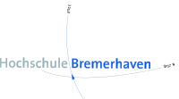

Diese Anwendung wurde, im Rahmen einer Semesterarbeit, von folgenden Studenten der Hochschule Bremerhaven (Studiengang Digitale Medienproduktion) erstellt:
Max M. Schneider
Jonas Kuske
Rieke Helmers
Hochschule Bremerhaven
An der Karlstadt 8
27568 Bremerhaven
Fach: Grundlagen der Medieninformatik 1 - Programmieren
Dozent: Alfred Schmidt, Tutor: Julian Timo Verbarg
Das Logo der HS Bremerhaven stammt von folgender Website unter Berücksichtigung der CC 3.0 Lizenz: Wikipedia.
Das "Darth Vader Profilbild" stammt von folgender Website unter Berücksichtigung der CC 3.0 Lizenz: The Noun Project.